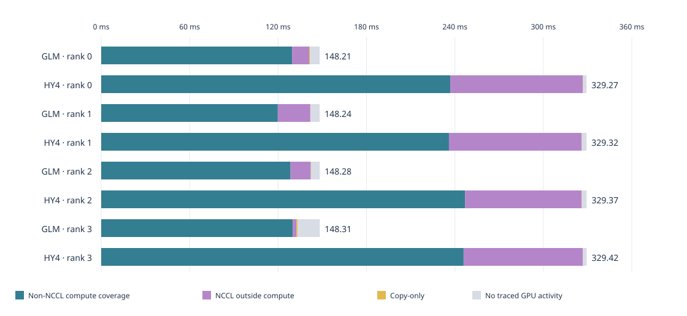

Measured execution · source attribution ·24 September 2026
Why HY4 trailed GLM by 2.27×
Similar model dimensions hide different attention kernels, extra gate and iHC work, FP32 routing, and more exposed pipeline waiting. The traces locate the whole observed time difference; controlled comparisons determine which changes can recover it.
2.270×Historical GLM / HY4 uncached throughput
2.214×Recovered profile throughput ratio
+181.1 msObserved final-stage cycle per batch
The main difference is how the work executes
On the 20-layer final stage, GLM's observed cycle is 148.308 ms per batch and HY4's is 329.416 ms. HY4 spends more time in sparse attention and query padding, then adds the attention gate and iHC. Its explicit FP32 router path adds another cost. Pipeline waiting also occupies substantially more of the elapsed span.
Sparse attention + query padding
+56.18 ms
iHC
+24.87 ms
Attention gate
+18.77 ms
Router projections
+10.29 ms
Remaining compute / overlap
+5.88 ms
Net NCCL / copy / idle coverage
+65.11 ms
The bars partition the observed +181.108 ms final-stage difference. “Remaining compute” includes signed overlap corrections and improvements elsewhere. They are accounting contributions, not independent optimization speedups. GLM router ownership uses complete-event sequence inference; unresolved projection families remain visible below.
Why the FLOPs estimate is compatible with this. The published one-prompt comparison is 12.5930 PFLOPs versus 10.9453 PFLOPs, or 1.15054×, for a completely uncached 100K prompt. Useful FLOPs do not include padded heads, memory copies, precision conversion or waiting. Nor do they give FP32 SIMT and low-precision Tensor Core arithmetic the same execution cost.
The exact bridge back to the historical 2.27×
The original points are 3.3575M and 1.4793M uncached tokens/minute. A recovered GLM profile runs at 3.299891M; the reconciled HY4 profile runs at 1.490702M. Both profiles are close to their historical anchors, but they are different experiments.
0.99734GLM / HY4 uncached tokens per logical batch
2.21956HY4 / GLM client time per logical batch
1.00769HY4 profile rate / historical rate
This multiplication is an exact rate identity. It ties the entire historical ratio to observed profile rates and workload accounting; it does not experimentally isolate the model, platform, corpus or runtime contributions.
Every GPU rank reconciles to the observed cycle
All 704,141 GLM kernels and 1,957,380 HY4 kernels are included. The GLM event archive's interval unions were reproduced independently. These bars use disjoint interval coverage, so simultaneous kernels are counted once.

Rank
Layers
GLM cycle ms
HY4 cycle ms
Δ cycle ms
Δ compute coverage ms
0
19
148.207
329.269
+181.062
+107.377
1
19
148.240
329.318
+181.078
+116.159
2
20
148.277
329.368
+181.091
+118.409
3
20
148.308
329.416
+181.108
+115.994
Cycle = first-to-last traced GPU span / logical batch count. Client completion time includes small endpoint effects and is used for throughput. A GPU interval budget is not a dependency critical path.
The source explains why the expensive paths are present
Sinks choose a different attention implementation
HY4 requires learned attention sinks. The installed SGLang dispatch allows them only on BF16 FlashMLA. This does not establish an intrinsic limitation of every TRT attention kernel. GLM used FP8 TRT sparse MLA. Equal useful attention FLOPs do not describe these different precision and kernel paths.
The Blackwell wrapper zero-fills a 128-head query and copies 64 useful heads into it. At 8192 query tokens, that is 1152 MiB of padded query storage and 2304 MiB of logical fill/copy traffic per call. These byte counts do not imply the same multiplicative slowdown.
Each layer projects the 6144-wide hidden state to 16384 gate values. HPC already fuses projection, sigmoid and multiplication; fusion does not remove the projection arithmetic.
The four-stream carrier is 384 MiB at 8192 BF16 tokens. Fused iHC still performs reductions, gate computation and carrier updates; these costs are absent from an ordinary residual stream.
The config adapter sets router_fp32=True. MoEGate allocates FP32 weights and casts the hidden input to FP32 before F.linear. The measured FP32 SIMT kernel has a source-level cause. Changing this requires numerical and routing validation.
Its inherited router calls linear_bf16_fp32. All 23,850 NVJet TSS GEMMs form exact same-stream sequences between fused residual normalization and the router-selection helper. This is strong source/count/order ownership evidence, with no recovered GLM CPU/NVTX proof.
These are model and kernel constraints. Learned sinks cannot simply be removed. The installed FP8 FlashMLA alternative is SM90-only, and SGLang rejects sinks on that dispatch; it is not a B300 flag fix. The useful 64-head HY4 query becomes a 128-head BF16 query under the current wrapper. A sink-preserving native 64-head Blackwell implementation has not been demonstrated here.
Both models use closely related 78-layer,6144-wide sparse-MLA/MoE backbones. HY4 additionally uses a four-stream iHC carrier, gated MLA and an explicit FP32 router. Low-precision routed experts do not make the whole model low precision. Both historical GLM and current HY4 disable shared-expert fusion, so that setting is common to the comparison.
The long NCCL kernels mostly wait for their senders
The HY4 trace joins NCCL GPU launches to CPU correlation and source-ordered scheduler operations. For two long output-ring receive streams, more than 99.98% of receive residency occurs before the paired sender GPU kernel starts. The large number on the timeline is principally a wait for a result.
Receive role
Paired events
Mean residency
Before sender starts
0 · output ring recv
642
89.231 ms
99.9893%
2 · output ring recv
644
78.267 ms
99.9889%
1 · proxy recv carrier
644
89.350 ms
99.3136%
3 · proxy recv carrier
645
85.162 ms
99.2697%
At 8192 tokens, GLM sends hidden plus residual and conditionally shared top-k indices:256/192/192 MiB across the three forward edges. HY4 sends its four-stream carrier plus indices:448 MiB on each edge. Larger messages exist, but their size alone does not explain the exposed waiting. Sender/receiver pairing uses source ordering and nearby completion timestamps; NCCL peer payload fields were absent, so this is not payload-ID correlation.
Depth 0 moves result waiting behind computation
Depth 0 uses four pipeline slots; depth 1 uses five. In this standalone loop, depth 0 launches current computation before exchanging earlier results; depth 1 exchanges those results first. The second complete HY4 trace shows how that ordering changes overlap:
Result receive
Mean GPU residency
Overlapped with compute
Outside compute
Rank 0 · Depth 1
88.925 ms
0.00%
88.925 ms
Rank 0 · Depth 0
175.563 ms
94.37%
9.880 ms
Rank 2 · Depth 1
78.145 ms
0.00%
78.145 ms
Rank 2 · Depth 0
0.202 ms
99.71%
0.001 ms
Rank 0's receive lasts longer under depth 0, but 94.37% of it overlaps compute. A longer NCCL kernel therefore need not mean more exposed delay. All four ranks shorten their observed cycle by about 60.9 ms while semantic kernel counts and non-NCCL service remain similar.
These are exact interval intersections from complete traces. Simultaneous residency does not prove simultaneous SM utilization, and per-role outside-compute times must not be added as independent critical-path costs. The two traced runs used different physical GPU subsets; the fresh same-device throughput control below addresses that limitation. This intervention is specific to the standalone PP loop.
Controlled kernel tests reproduce the key costs
These finite tests use the same physical B300 GPU and identical synthetic numerical inputs for each pair. Each arm has 16 measurements in ABBA order after warmup. The attention shape is 8192 queries,57344 prefix tokens and 2048 selected keys; the router shape is 8192×6144×256.
Operation
Path A
Path B
A / B time
No-sink attention
BF16 FlashMLA ·128 physical heads 3.502 ms P10–P90: 3.405–3.592
FP8 TRT ·64 heads 1.757 ms P10–P90: 1.689–1.815
1.99×
Same synthetic sinks and FlashMLA
Materialize padded query each call 4.519 ms P10–P90: 4.511–4.594
Identical pre-materialized query 3.563 ms P10–P90: 3.547–3.609
1.27×
Router projection + input conversion
HY4-style FP32 path 0.579 ms P10–P90: 0.577–0.586
BF16 inputs/weights →FP32 output 0.038 ms P10–P90: 0.036–0.043
15.08×
Router GEMM only
FP32 inputs/weights 0.458 ms P10–P90: 0.456–0.458
BF16 inputs/weights →FP32 output 0.038 ms P10–P90: 0.036–0.039
12.17×
Removing query materialization saves 0.956 ms per attention call while preserving useful outputs and log-sum-exp bit-for-bit with identical synthetic sinks. Materialization alone measures 0.984 ms. The router comparison produces exactly equal results at every one of 2,097,152 output elements and also matches an independent CPU integer oracle.
The no-sink attention pair combines backend, precision and physical head count. It is not a validated HY4 backend substitution. FP8 uses the installed release's published numerical test criterion plus relative L2≤2%; its observed relative L2 is 1.287%. The initial stricter failure remains recorded. The optional zero-prefix case failed the strict BF16 absolute-error gate; the longer-prefix case is unqualified. These timing results cover only the stated 65K context. Synthetic equality does not establish learned-model accuracy under a precision change, and per-call savings are not end-to-end speedups.
What was comparable, and what was different
Control
Recovered GLM profile
HY4 profile
GPU / host platform
4×GB300 / Grace
4×B300 / x 86
Topology / chunk / active cap
PP4 /8192 /80
PP4 /8192 /80
Requests / output
128 successful / one token each
128 successful / one token each
Logical batches
318
650
Uncached tokens
2,595,229
5,318,885
Token-weighted cache hit
60.254%
34.393%
Client completion span
47.187542s
214.082447s
Graph execution
Off
Off
PP async depth
0
1
Corpus / tokenizer / runtime
GLM-native historical pack / older runtime
HY4-native 80K pack / current runtime
Both runs complete 128 successful one-token requests. GLM's generic “all records valid” field is false because its intentional 128-record limit stopped before an expected 129th source record. The bounded profile is qualified from completion counts and complete GPU capture, not by relabeling that generic flag as passed. GLM warmup/flush and image controls come from archived receipts rather than a newly recovered raw SQLite record.
One fresh depth-1 control and two depth-0 phases used the same four physical B300 GPUs in the same pipeline-rank order. The immutable image, five source overlays, checkpoint, input IDs, client cap, cache configuration and other server arguments were preserved. Capture was inactive during all three phases. Each phase started after an acknowledged four-rank cache flush and ended after all 128 one-token requests drained.
Run
Setting
Uncached TPM
Span
Qualification
Fresh control
HY4, depth 1
1.4660M
217.689s
128/128 successful; 650 batches on each rank; no measured Decode batches.
Depth 0 — first run
HY4, depth 0
1.8094M
176.453s
128/128 successful; 651 batches on each rank; no measured Decode batches.
Depth 0 — repeat
HY4, depth 0
1.8451M
172.964s
128/128 successful; 650 batches on each rank; no measured Decode batches.
Depth 0 achieved 1.8094M and 1.8451M uncached tokens/minute, versus 1.4660M at depth 1: gains of 23.42% and 25.86%. Both observed results are shown.
The repeat exactly matches the control: 5,318,885 uncached tokens, 2,788,352 cached tokens and 650 logical batches. The first depth-0 run has 2,240 fewer cache hits (0.0421% more uncached work) and one extra batch. All per-request and four-rank token accounts reconcile.
The separate complete traces show the mechanism: result receives overlap computation at depth 0, reducing the observed per-batch cycle by approximately 60.9 ms while semantic kernel counts remain unchanged.
This is a sequential finite-corpus comparison, not a randomized confidence interval or a maximum-capacity certificate.
The setting changes the standalone pipeline loop; this result does not by itself establish a production PD tuning recommendation.
The full matched GLM experiment remains pending verified checkpoint staging. Its common native-input control and recovered historical chat-input control will separate workload and historical-environment effects from current model implementation.
What this establishes, and what still needs an intervention
Established: the full observed ratio reconciles; all four rank budgets close; the dominant kernel families have source/config explanations; long HY4 receives largely wait before the sender begins.
Not established by arithmetic: a unique causal percentage of the historical 2.27× for each source difference, or the wall-time speedup from deleting a family. The hardware, corpus/cache/context and runtime differ. A profile budget can sum perfectly while several mechanisms interact.
The same-GPU microbenchmarks isolate a query-materialization cost and confirm the large implementation difference between FP32 and BF16 router projections on exact synthetic inputs. They do not validate a production replacement or split backend, precision and head-padding effects into unique causal percentages. Full matched GLM trials are still needed to separate the historical environment and workload effects from the model implementation.
The JSON contains exact values, source file/line references and content hashes. It contains no prompts, token sequences, private messages, credentials or internal host paths. Source citations refer to captured files: HY4 was read from the running image; GLM source matches the recorded historical image commit but is not an independently hashed historical installation.
Rank 0 · 19 layers · +181.062 ms/batch
Observed component
GLM ms
HY4 ms
Δ ms
NCCL coverage outside compute
11.611
89.900
+78.289
Sparse attention kernel
29.177
64.776
+35.598
HY4 iHC
0.000
23.305
+23.305
HY4 attention gate
0.000
17.739
+17.739
Query padding copy
0.000
12.937
+12.937
Router projection (GLM ownership inferred)
0.437
9.455
+9.018
Query padding zero-fill
0.000
6.338
+6.338
Routed MoE up projection
18.139
22.158
+4.019
Routed MoE down projection
9.553
11.695
+2.142
Other dense projections / shared experts
40.565
42.643
+2.078
Other unresolved kernels
2.232
4.303
+2.071
Attention preparation
3.798
5.106
+1.308
HY4 initial carrier repeat
0.000
0.399
+0.399
MoE routing / quantization / finalize
2.955
3.349
+0.394
KV/RoPE contiguous copy
0.000
0.076
+0.076
Other normalization
0.373
0.379
+0.005
Non-NCCL overlap correction
-0.879
-1.006
-0.127
Indexer preparation
0.600
0.356
-0.245
Memory-copy-only coverage
0.618
0.197
-0.421
GLM fused residual normalization
2.259
0.000
-2.259
Indexer scores
11.256
8.867
-2.389
No traced GPU activity
6.505
2.323
-4.183
Indexer top-k
9.005
3.973
-5.032
Rank 1 · 19 layers · +181.078 ms/batch
Observed component
GLM ms
HY4 ms
Δ ms
NCCL coverage outside compute
22.072
89.998
+67.927
Sparse attention kernel
28.761
64.747
+35.986
HY4 iHC
0.000
23.182
+23.182
HY4 attention gate
0.000
17.928
+17.928
Query padding copy
0.000
13.050
+13.050
Router projection (GLM ownership inferred)
0.520
10.125
+9.605
Query padding zero-fill
0.000
6.334
+6.334
Other dense projections / shared experts
35.071
40.594
+5.524
Other unresolved kernels
1.780
4.297
+2.517
Routed MoE up projection
21.580
23.870
+2.290
Attention preparation
3.773
5.127
+1.354
Indexer scores
6.354
7.615
+1.261
Routed MoE down projection
11.471
12.593
+1.123
KV/RoPE contiguous copy
0.000
0.077
+0.077
MoE routing / quantization / finalize
3.487
3.539
+0.052
Memory-copy-only coverage
0.132
0.179
+0.047
Other normalization
0.347
0.379
+0.032
Indexer preparation
0.347
0.307
-0.040
Non-NCCL overlap correction
-0.859
-1.001
-0.142
Indexer top-k
4.842
3.194
-1.648
GLM fused residual normalization
2.325
0.000
-2.325
No traced GPU activity
6.238
3.183
-3.055
Rank 2 · 20 layers · +181.091 ms/batch
Observed component
GLM ms
HY4 ms
Δ ms
NCCL coverage outside compute
13.690
79.087
+65.397
Sparse attention kernel
30.542
66.928
+36.386
HY4 iHC
0.000
24.383
+24.383
HY4 attention gate
0.000
18.842
+18.842
Query padding copy
0.000
13.720
+13.720
Router projection (GLM ownership inferred)
0.548
10.606
+10.058
Query padding zero-fill
0.000
6.670
+6.670
Other dense projections / shared experts
36.514
42.432
+5.918
Routed MoE up projection
22.696
25.583
+2.887
Other unresolved kernels
1.941
4.550
+2.609
Routed MoE down projection
12.058
13.485
+1.428
Attention preparation
3.983
5.388
+1.405
KV/RoPE contiguous copy
0.000
0.080
+0.080
MoE routing / quantization / finalize
3.674
3.725
+0.051
Other normalization
0.363
0.401
+0.038
Memory-copy-only coverage
0.183
0.183
+0.000
Indexer preparation
0.427
0.308
-0.119
Non-NCCL overlap correction
-0.907
-1.034
-0.127
Indexer scores
7.912
7.582
-0.330
GLM fused residual normalization
2.426
0.000
-2.426
No traced GPU activity
5.941
3.226
-2.715
Indexer top-k
6.287
3.223
-3.063
Rank 3 · 20 layers · +181.108 ms/batch
Observed component
GLM ms
HY4 ms
Δ ms
NCCL coverage outside compute
2.481
80.805
+78.324
Sparse attention kernel
30.542
66.443
+35.901
HY4 iHC
0.000
24.873
+24.873
HY4 attention gate
0.000
18.775
+18.775
Query padding copy
0.000
13.620
+13.620
Router projection (GLM ownership inferred)
0.548
10.834
+10.286
Query padding zero-fill
0.000
6.657
+6.657
Other dense projections / shared experts
37.565
42.253
+4.689
Other unresolved kernels
2.051
4.568
+2.517
Routed MoE up projection
22.714
25.214
+2.500
Attention preparation
3.986
5.389
+1.403
Routed MoE down projection
12.025
13.387
+1.362
KV/RoPE contiguous copy
0.000
0.080
+0.080
Other normalization
0.360
0.396
+0.036
MoE routing / quantization / finalize
3.683
3.707
+0.024
Indexer preparation
0.428
0.300
-0.128
Non-NCCL overlap correction
-0.905
-1.138
-0.233
Indexer scores
8.001
7.426
-0.575
Memory-copy-only coverage
0.762
0.183
-0.578
GLM fused residual normalization
2.478
0.000
-2.478
Indexer top-k
6.434
3.120
-3.314
No traced GPU activity
15.156
2.524
-12.632
In detailed tables, kernel-family residency is additive only after the explicit negative overlap correction. Zero in a named family means no identified events in that named family, not zero mathematical cost. The grouping retains unresolved dense projection/shared-expert work rather than assigning all shortened NVJet names by guesswork.
{kind=link}